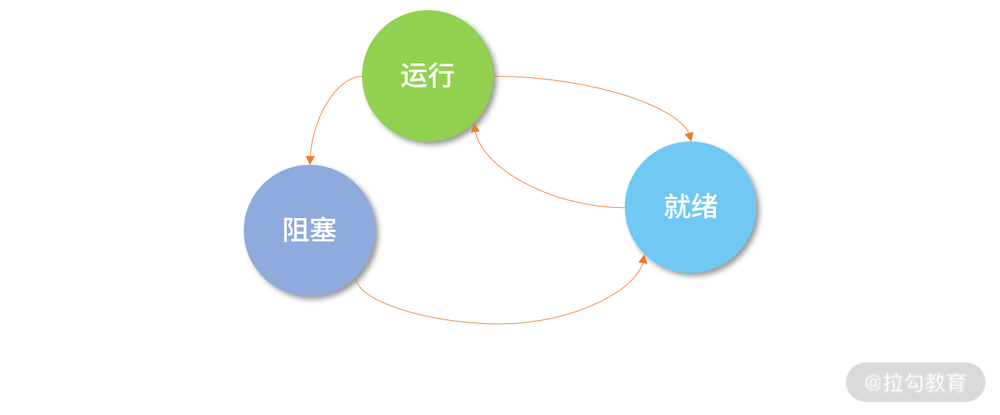
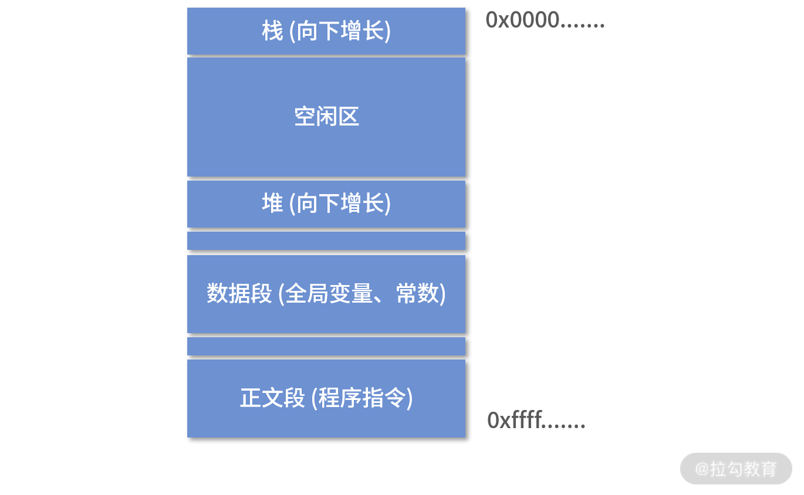

- 00 开篇词 为什么大厂面试必考操作系统？.md.html
- 00 课前必读 构建知识体系，可以这样做！.md.html
- 01 计算机是什么：“如何把程序写好”这个问题是可计算的吗？.md.html
- 02 程序的执行：相比 32 位，64 位的优势是什么？（上）.md.html
- 03 程序的执行：相比 32 位，64 位的优势是什么？（下）.md.html
- 04 构造复杂的程序：将一个递归函数转成非递归函数的通用方法.md.html
- 05 存储器分级：L1 Cache 比内存和 SSD 快多少倍？.md.html
- 05 (1) 加餐 练习题详解（一）.md.html
- 06 目录结构和文件管理指令：rm -rf 指令的作用是？.md.html
- 07 进程、重定向和管道指令：xargs 指令的作用是？.md.html
- 08 用户和权限管理指令： 请简述 Linux 权限划分的原则？.md.html
- 09 Linux 中的网络指令：如何查看一个域名有哪些 NS 记录？.md.html
- 10 软件的安装： 编译安装和包管理器安装有什么优势和劣势？.md.html
- 11 高级技巧之日志分析：利用 Linux 指令分析 Web 日志.md.html
- 12 高级技巧之集群部署：利用 Linux 指令同时在多台机器部署程序.md.html
- 12 (1)加餐 练习题详解（二）.md.html
- 13 操作系统内核：Linux 内核和 Windows 内核有什么区别？.md.html
- 14 用户态和内核态：用户态线程和内核态线程有什么区别？.md.html
- 15 中断和中断向量：Javajs 等语言为什么可以捕获到键盘输入？.md.html
- 16 WinMacUnixLinux 的区别和联系：为什么 Debian 漏洞排名第一还这么多人用？.md.html
- 16 (1)加餐 练习题详解（三）.md.html
- 17 进程和线程：进程的开销比线程大在了哪里？.md.html
- 18 锁、信号量和分布式锁：如何控制同一时间只有 2 个线程运行？.md.html
- 19 乐观锁、区块链：除了上锁还有哪些并发控制方法？.md.html
- 20 线程的调度：线程调度都有哪些方法？.md.html
- 21 哲学家就餐问题：什么情况下会触发饥饿和死锁？.md.html
- 22 进程间通信： 进程间通信都有哪些方法？.md.html
- 23 分析服务的特性：我的服务应该开多少个进程、多少个线程？.md.html
- 23 (1)加餐 练习题详解（四）.md.html
- 24 虚拟内存 ：一个程序最多能使用多少内存？.md.html
- 25 内存管理单元： 什么情况下使用大内存分页？.md.html
- 26 缓存置换算法： LRU 用什么数据结构实现更合理？.md.html
- 27 内存回收上篇：如何解决内存的循环引用问题？.md.html
- 28 内存回收下篇：三色标记-清除算法是怎么回事？.md.html
- 28 (1)加餐 练习题详解（五）.md.html
- 29 Linux 下的各个目录有什么作用？.md.html
- 30 文件系统的底层实现：FAT、NTFS 和 Ext3 有什么区别？.md.html
- 31 数据库文件系统实例：MySQL 中 B 树和 B+ 树有什么区别？.md.html
- 32 HDFS 介绍：分布式文件系统是怎么回事？.md.html
- 32 (1)加餐 练习题详解（六）.md.html
- 33 互联网协议群（TCPIP）：多路复用是怎么回事？.md.html
- 34 UDP 协议：UDP 和 TCP 相比快在哪里？.md.html
- 35 Linux 的 IO 模式：selectpollepoll 有什么区别？.md.html
- 36 公私钥体系和网络安全：什么是中间人攻击？.md.html
- 36 (1)加餐 练习题详解（七）.md.html
- 37 虚拟化技术介绍：VMware 和 Docker 的区别？.md.html
- 38 容器编排技术：如何利用 K8s 和 Docker Swarm 管理微服务？.md.html
- 39 Linux 架构优秀在哪里.md.html
- 40 商业操作系统：电商操作系统是不是一个噱头？.md.html
- 40 (1)加餐 练习题详解（八）.md.html
- 41 结束语 论程序员的发展——信仰、选择和博弈.md.html
- 捐赠
17 进程和线程：进程的开销比线程大在了哪里？
不知你在面试中是否遇到过这样的问题，题目很短，看似简单，但在回答时又感觉有点吃力？比如下面这两个问题：
- 进程内部都有哪些数据？
- 为什么创建进程的成本很高？
这样的问题确实不好回答，除非你真正理解了进程和线程的原理，否则很容易掉入面试大坑。本讲，我将带你一起探究问题背后的原理，围绕面试题展开理论与实践知识的学习。通过本讲的学习，希望你可以真正理解进程和线程原理，从容应对面试。
进程和线程
进程（Process），顾名思义就是正在执行的应用程序，是软件的执行副本。而线程是轻量级的进程。
进程是分配资源的基础单位。而线程很长一段时间被称作轻量级进程（Light Weighted Process），是程序执行的基本单位。
在计算机刚刚诞生的年代，程序员拿着一个写好程序的闪存卡，插到机器里，然后电能推动芯片计算，芯片每次从闪存卡中读出一条指令，执行后接着读取下一条指令。闪存中的所有指令执行结束后，计算机就关机。
早期的 ENIAC
一开始，这种单任务的模型，在那个时代叫作作业（Job），当时计算机的设计就是希望可以多处理作业。图形界面出现后，人们开始利用计算机进行办公、购物、聊天、打游戏等，因此一台机器正在执行的程序会被随时切来切去。于是人们想到，设计进程和线程来解决这个问题。
每一种应用，比如游戏，执行后是一个进程。但是游戏内部需要图形渲染、需要网络、需要响应用户操作，这些行为不可以互相阻塞，必须同时进行，这样就设计成线程。
资源分配问题
设计进程和线程，操作系统需要思考分配资源。最重要的 3 种资源是：计算资源（CPU）、内存资源和文件资源。早期的 OS 设计中没有线程，3 种资源都分配给进程，多个进程通过分时技术交替执行，进程之间通过管道技术等进行通信。
但是这样做的话，设计者们发现用户（程序员），一个应用往往需要开多个进程，因为应用总是有很多必须要并行做的事情。并行并不是说绝对的同时，而是说需要让这些事情看上去是同时进行的——比如图形渲染和响应用户输入。于是设计者们想到了，进程下面，需要一种程序的执行单位，仅仅被分配 CPU 资源，这就是线程。
轻量级进程
线程设计出来后，因为只被分配了计算资源（CPU），因此被称为轻量级进程。被分配的方式，就是由操作系统调度线程。操作系统创建一个进程后，进程的入口程序被分配到了一个主线程执行，这样看上去操作系统是在调度进程，其实是调度进程中的线程。
这种被操作系统直接调度的线程，我们也成为内核级线程。另外，有的程序语言或者应用，用户（程序员）自己还实现了线程。相当于操作系统调度主线程，主线程的程序用算法实现子线程，这种情况我们称为用户级线程。Linux 的 PThread API 就是用户级线程，KThread API 则是内核级线程。
分时和调度
因为通常机器中 CPU 核心数量少（从几个到几十个）、进程&线程数量很多（从几十到几百甚至更多），你可以类比为发动机少，而机器多，因此进程们在操作系统中只能排着队一个个执行。每个进程在执行时都会获得操作系统分配的一个时间片段，如果超出这个时间，就会轮到下一个进程（线程）执行。再强调一下，现代操作系统都是直接调度线程，不会调度进程。
分配时间片段
如下图所示，进程 1 需要 2 个时间片段，进程 2 只有 1 个时间片段，进程 3 需要 3 个时间片段。因此当进程 1 执行到一半时，会先挂起，然后进程 2 开始执行；进程 2 一次可以执行完，然后进程 3 开始执行，不过进程 3 一次执行不完，在执行了 1 个时间片段后，进程 1 开始执行；就这样如此周而复始。这个就是分时技术。
下面这张图更加直观一些，进程 P1 先执行一个时间片段，然后进程 P2 开始执行一个时间片段， 然后进程 P3，然后进程 P4……
注意，上面的两张图是以进程为单位演示，如果换成线程，操作系统依旧是这么处理。
进程和线程的状态
一个进程（线程）运行的过程，会经历以下 3 个状态：
- 进程（线程）创建后，就开始排队，此时它会处在“就绪”（Ready）状态；
- 当轮到该进程（线程）执行时，会变成“运行”（Running）状态；
- 当一个进程（线程）将操作系统分配的时间片段用完后，会回到“就绪”（Ready）状态。
我这里一直用进程(线程）是因为旧的操作系统调度进程，没有线程；现代操作系统调度线程。
有时候一个进程（线程）会等待磁盘读取数据，或者等待打印机响应，此时进程自己会进入“阻塞”（Block）状态。
因为这时计算机的响应不能马上给出来，而是需要等待磁盘、打印机处理完成后，通过中断通知 CPU，然后 CPU 再执行一小段中断控制程序，将控制权转给操作系统，操作系统再将原来阻塞的进程（线程）置为“就绪”（Ready）状态重新排队。
而且，一旦一个进程（线程）进入阻塞状态，这个进程（线程）此时就没有事情做了，但又不能让它重新排队（因为需要等待中断），所以进程（线程）中需要增加一个“阻塞”（Block）状态。
注意，因为一个处于“就绪”（Ready）的进程（线程）还在排队，所以进程（线程）内的程序无法执行，也就是不会触发读取磁盘数据的操作，这时，“就绪”（Ready）状态无法变成阻塞的状态，因此下图中没有从就绪到阻塞的箭头。
而处于“阻塞”（Block）状态的进程（线程）如果收到磁盘读取完的数据，它又需要重新排队，所以它也不能直接回到“运行”（Running）状态，因此下图中没有从阻塞态到运行态的箭头。

进程和线程的设计
接下来我们思考几个核心的设计约束：
- 进程和线程在内存中如何表示？需要哪些字段？
- 进程代表的是一个个应用，需要彼此隔离，这个隔离方案如何设计？
- 操作系统调度线程，线程间不断切换，这种情况如何实现？
- 需要支持多 CPU 核心的环境，针对这种情况如何设计？
接下来我们来讨论下这4个问题。
进程和线程的表示
可以这样设计，在内存中设计两张表，一张是进程表、一张是线程表。
进程表记录进程在内存中的存放位置、PID 是多少、当前是什么状态、内存分配了多大、属于哪个用户等，这就有了进程表。如果没有这张表，进程就会丢失，操作系统不知道自己有哪些进程。这张表可以考虑直接放到内核中。
细分的话，进程表需要这几类信息。
- 描述信息：这部分是描述进程的唯一识别号，也就是 PID，包括进程的名称、所属的用户等。
- 资源信息：这部分用于记录进程拥有的资源，比如进程和虚拟内存如何映射、拥有哪些文件、在使用哪些 I/O 设备等，当然 I/O 设备也是文件。
- 内存布局：操作系统也约定了进程如何使用内存。如下图所示，描述了一个进程大致内存分成几个区域，以及每个区域用来做什么。 每个区域我们叫作一个段。

操作系统还需要一张表来管理线程，这就是线程表。线程也需要 ID， 可以叫作 ThreadID。然后线程需要记录自己的执行状态（阻塞、运行、就绪）、优先级、程序计数器以及所有寄存器的值等等。线程需要记录程序计数器和寄存器的值，是因为多个线程需要共用一个 CPU，线程经常会来回切换，因此需要在内存中保存寄存器和 PC 指针的值。
用户级线程和内核级线程存在映射关系，因此可以考虑在内核中维护一张内核级线程的表，包括上面说的字段。
如果考虑到这种映射关系，比如 n-m 的多对多映射，可以将线程信息还是存在进程中，每次执行的时候才使用内核级线程。相当于内核中有个线程池，等待用户空间去使用。每次用户级线程把程序计数器等传递过去，执行结束后，内核线程不销毁，等待下一个任务。这里其实有很多灵活的实现，总体来说，创建进程开销大、成本高；创建线程开销小，成本低。
隔离方案
操作系统中运行了大量进程，为了不让它们互相干扰，可以考虑为它们分配彼此完全隔离的内存区域，即便进程内部程序读取了相同地址，而实际的物理地址也不会相同。这就好比 A 小区的 10 号楼 808 和 B 小区的 10 号楼 808 不是一套房子，这种方法叫作地址空间，我们将在“21 讲”的页表部分讨论“地址空间”的详细内容。
所以在正常情况下进程 A 无法访问进程 B 的内存，除非进程 A 找到了某个操作系统的漏洞，恶意操作了进程 B 的内存，或者利用我们在“21 讲”讲到的“进程间通信”的手段。
对于一个进程的多个线程来说，可以考虑共享进程分配到的内存资源，这样线程就只需要被分配执行资源。
进程（线程）切换
进程（线程）在操作系统中是不断切换的，现代操作系统中只有线程的切换。 每次切换需要先保存当前寄存器的值的内存，注意 PC 指针也是一种寄存器。当恢复执行的时候，就需要从内存中读出所有的寄存器，恢复之前的状态，然后执行。
上面讲到的内容，我们可以概括为以下 5 个步骤：
- 当操作系统发现一个进程（线程）需要被切换的时候，直接控制 PC 指针跳转是非常危险的事情，所以操作系统需要发送一个“中断”信号给 CPU，停下正在执行的进程（线程）。
- 当 CPU 收到中断信号后，正在执行的进程（线程）会立即停止。注意，因为进程（线程）马上被停止，它还来不及保存自己的状态，所以后续操作系统必须完成这件事情。
- 操作系统接管中断后，趁寄存器数据还没有被破坏，必须马上执行一小段非常底层的程序（通常是汇编编写），帮助寄存器保存之前进程（线程）的状态。
- 操作系统保存好进程状态后，执行调度程序，决定下一个要被执行的进程（线程）。
- 最后，操作系统执行下一个进程（线程）。
当然，一个进程（线程）被选择执行后，它会继续完成之前被中断时的任务，这需要操作系统来执行一小段底层的程序帮助进程（线程）恢复状态。
一种可能的算法就是通过栈这种数据结构。进程（线程）中断后，操作系统负责压栈关键数据（比如寄存器）。恢复执行时，操作系统负责出栈和恢复寄存器的值。
多核处理
在多核系统中我们上面所讲的设计原则依然成立，只不过动力变多了，可以并行执行的进程（线程）。通常情况下，CPU 有几个核，就可以并行执行几个进程（线程）。这里强调一个概念，我们通常说的并发，英文是 concurrent，指的在一段时间内几个任务看上去在同时执行（不要求多核）；而并行，英文是 parallel，任务必须绝对的同时执行（要求多核）。
比如一个 4 核的 CPU 就好像拥有 4 条流水线，可以并行执行 4 个任务。一个进程的多个线程执行过程则会产生竞争条件，这块我们会在“19 讲”锁和信号量部分给你介绍。因为操作系统提供了保存、恢复进程状态的能力，使得进程（线程）也可以在多个核心之间切换。
创建进程（线程）的 API
用户想要创建一个进程，最直接的方法就是从命令行执行一个程序，或者双击打开一个应用。但对于程序员而言，显然需要更好的设计。
站在设计者的角度，你可以这样思考：首先，应该有 API 打开应用，比如可以通过函数打开某个应用；另一方面，如果程序员希望执行完一段代价昂贵的初始化过程后，将当前程序的状态复制好几份，变成一个个单独执行的进程，那么操作系统提供了 fork 指令。

也就是说，每次 fork 会多创造一个克隆的进程，这个克隆的进程，所有状态都和原来的进程一样，但是会有自己的地址空间。如果要创造 2 个克隆进程，就要 fork 两次。
你可能会问：那如果我就是想启动一个新的程序呢？
我在上文说过：操作系统提供了启动新程序的 API。
你可能还会问：如果我就是想用一个新进程执行一小段程序，比如说每次服务端收到客户端的请求时，我都想用一个进程去处理这个请求。
如果是这种情况，我建议你不要单独启动进程，而是使用线程。因为进程的创建成本实在太高了，因此不建议用来做这样的事情：要创建条目、要分配内存，特别是还要在内存中形成一个个段，分成不同的区域。所以通常，我们更倾向于多创建线程。
不同程序语言会自己提供创建线程的 API，比如 Java 有 Thread 类；go 有 go-routine（注意不是协程，是线程）。
总结
本讲我们学习了进程和线程的基本概念。了解了操作系统如何调度进程（线程）和分时算法的基本概念，然后了解进程（线程）的 3 种基本状态。线程也被称作轻量级进程，由操作系统直接调度的，是内核级线程。我们还学习了线程切换保存、恢复状态的过程。
我们发现进程和线程是操作系统为了分配资源设计的两个概念，进程承接存储资源，线程承接计算资源。而进程包含线程，这样就可以做到进程间内存隔离。这是一个非常巧妙的设计，概念清晰，思路明确，你以后做架构的时候可以多参考这样的设计。 如果只有进程，或者只有线程，都不能如此简单的解决我们遇到的问题。
那么通过这节课的学习，你现在可以来回答本节关联的面试题目：进程的开销比线程大在了哪里？
【解析】 Linux 中创建一个进程自然会创建一个线程，也就是主线程。创建进程需要为进程划分出一块完整的内存空间，有大量的初始化操作，比如要把内存分段（堆栈、正文区等）。创建线程则简单得多，只需要确定 PC 指针和寄存器的值，并且给线程分配一个栈用于执行程序，同一个进程的多个线程间可以复用堆栈。因此，创建进程比创建线程慢，而且进程的内存开销更大。
思考题
最后我再给你出一道思考题。考虑下面的程序：
fork()
fork()
fork()
print(“Hello World\n”)
请问这个程序执行后， 输出结果 Hello World 会被打印几次？
你可以把你的答案、思路或者课后总结写在留言区，这样可以帮助你产生更多的思考，这也是构建知识体系的一部分。经过长期的积累，相信你会得到意想不到的收获。如果你觉得今天的内容对你有所启发，欢迎分享给身边的朋友。期待看到你的思考！
© 2019 - 2023 Liangliang Lee. Powered by gin and hexo-theme-book.